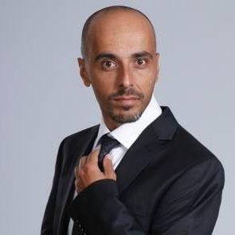

אלי פיניש
Local time:
הקדמה
אלי פיניש (נולד ב-17 ביוני 1975) הוא קומיקאי, שחקן, חקיין, מדבב וסטנדאפיסט ישראלי. ידוע כחבר קאסט בתוכנית הסאטירית "ארץ נהדרת" וכשותפו של מריאנו אידלמן לצמד הקומי "אלי ומריאנו".
מהלך הקריירה
פיניש גדל בנתניה לאב שעלה מתוניסיה, ולאם שעלתה ממרוקו. כשהיה בן תשע, נפטרה אמו ממחלת הסרטן. למד בתיכון שרת בנתניה.[1]
בשנת 1996, מיד לאחר שירותו הצבאי, למד משחק בבית הספר לאומנויות "הבוסתן" בנתניה.
פרץ לראשונה לתודעת הקהל כאשר הופיע לצד מריאנו אידלמן, בן כיתתו מהתיכון, בפינת הסטנד-אפ בתוכנית הבידור של דודו טופז "הראשון בבידור". הצמד קיבלו פינה קבועה בתוכנית בה הם השתתפו במשך שנתיים.
בעקבות הפרסום וההצלחה הרבה לה זכו, העלה הצמד מופע סטנד-אפ בשם "אלי ומריאנו עוברים על הצחוק", איתו הופיעו ברחבי הארץ וגם בעולם. בשנת 2001 הופיעו בסדרה משלהם בשם "אחלה סרט", וב־2002 הוציאו לשוק דיסק DVD אשר מכיל קטעים נבחרים ממופע הסטנדאפ שלהם. בתקופה זו הופיעו בתוכנית הסטנד-אפ המיוחדת של ערוץ ביפ "לא נפסיק לצחוק", לצד קומיקאים כמו אסי כהן, טל פרידמן ורותם אבוהב.
בשנת 2003 הופיע פיניש בסדרות היחיד "אלי נגד העולם" ו"הדרבי הגדול", ששודרו גם כן בערוץ ביפ.
מאז שנת 2003 מופיע פיניש בתוכנית הסאטירה "ארץ נהדרת". בתוכנית, אשר משודרת בקשת 12 (ערוץ 2), במסגרת שידורי קשת, מחקה פיניש, לצד בדרנים כמו איל קיציס, טל פרידמן ומריאנו אידלמן, מגוון דמויות שהפכו לאהודות, ביניהן עוזי כהן, יאיר לפיד, שמעון פרס, משה קצב, בנימין בן אליעזר, עמיר בניון, משה כחלון, אלי ישי, דודי אמסלם וזופר אבדיה.
בשנת 2004 הוציא מיני אלבום מוזיקלי ומתוכו השיר "זמר מועדונים".
בשנת 2005 שיחק תפקיד דרמטי ראשון בסדרה של יאיר לפיד - "חדר מלחמה", שם שיחק לצד איילת זורר וליאור אשכנזי.
לקראת סוף 2006, החל פיניש לככב בסדרה "לא הבטחתי לך" (של "יס") לצד גורי אלפי ודני גבע.
בשנת 2010 גילם את המלך ברע בסרט של חבורת "ארץ נהדרת", "זוהי סדום".
ב-2012 השתתף בתפקיד ראשי (גולן) בסרטו של שמי זרחין "העולם מצחיק". באותה שנה השתתף פיניש ב"ספיי פסטיגל" לצד אליאנה תדהר,תובל שפיר,יעל בר זוהר ועוד.
בשנת 2014 הוא השתתף בסרט "שושנה חלוץ מרכזי" בבימויו של שי כנות, שבו הוא מגלם עבריין צמרת חסר רחמים בשם כושי בוקובזה. באותה שנה הוא השתתף בפסטיגל בתפקיד שליט אואזיס לצד מריאנו אידלמן.
בשנת 2016 השתתף בתוכנית "תריץ אחורה" ששודרה בטלוויזיה החינוכית הישראלית. באוגוסט אותה שנה החל להצטלם לסיטקום "צפוף" של ערוץ זום.
בשנת 2021 השתתף בדרמת המתח "השוטרים" של קשת 12.
בשנת 2004 דיבב את דמותו של ארני בסרט "תפוס ת'כריש" לצד שלמה בראבא ומריאנו אידלמן.
בשנת 2008 דיבב את דמותו של הורטון בגרסה העברית של הסרט הורטון שומע מישהו.
מ-2012 עד 2021 פיניש השתתף בקמפיינים המונפשים של "ביטוח ישיר", בהפקת חברת באומן בר ריבנאי, שבהן הוא דיבב את יונה לצד טל פרידמן שדיבב את יוניאל.[2]
חייו האישיים
פיניש היה נשוי לליטל (לוליק) גת, ולהם בן אחד. לאחר מכן ניהל במשך שנתיים זוגיות עם השחקנית דנה פרידר.
ב-2017 התארס לבת זוגו, מדריכת הגלישה שלי לביא הצעירה ממנו ב-15 שנה. השניים נישאו ב-6 באוקטובר 2017. ב-2 ביולי 2018 נולדה לשניים בת. באוגוסט 2020 נפרדו.[3]
פיניש מתגורר בשכונת נווה איתמר שבנתניה.
